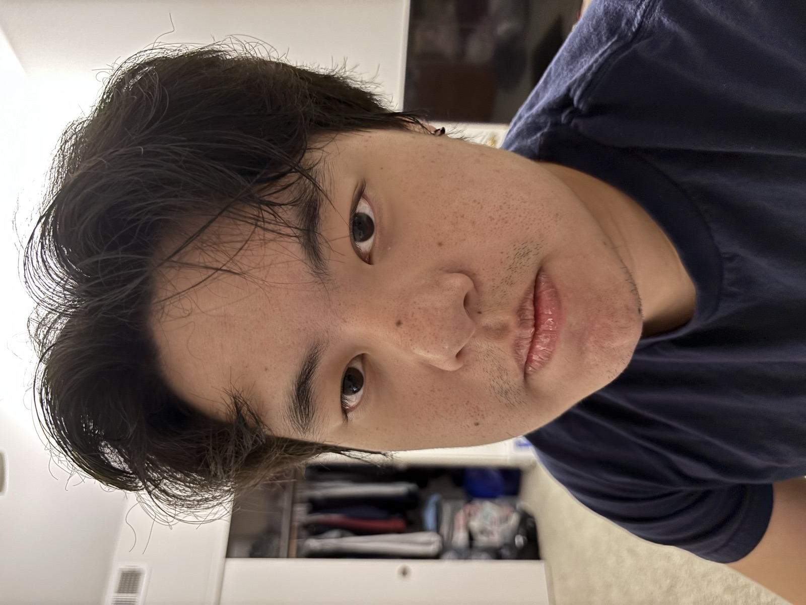
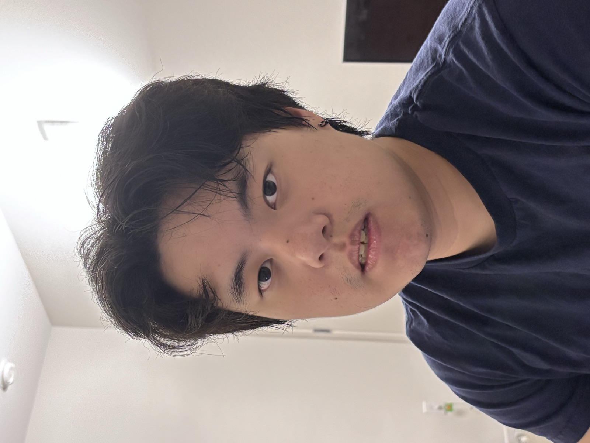
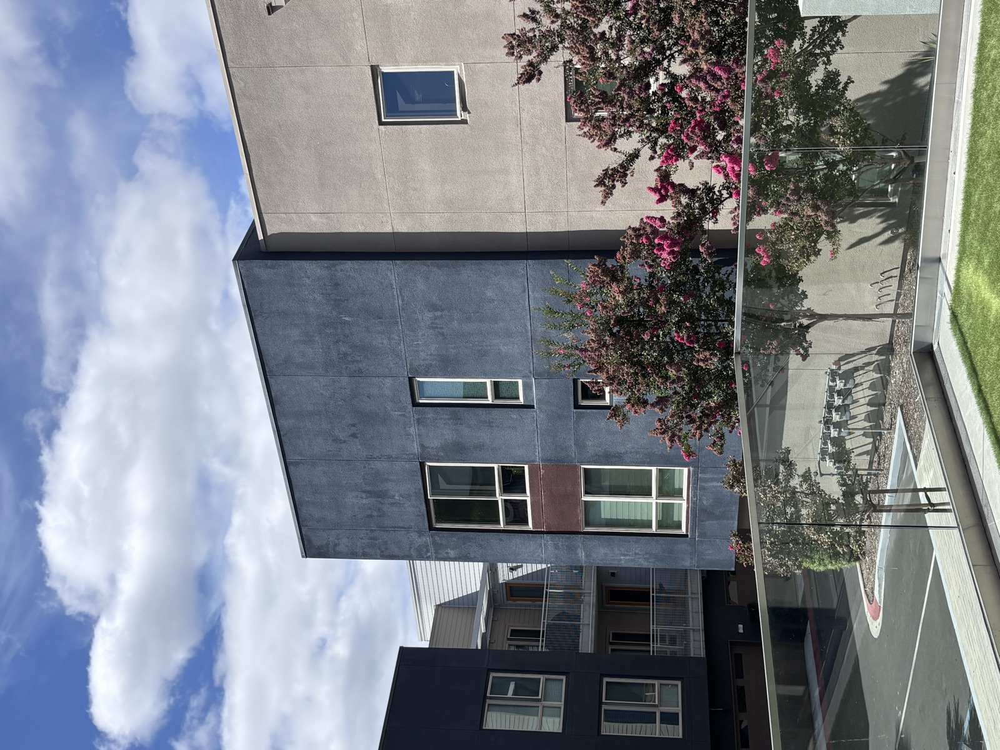
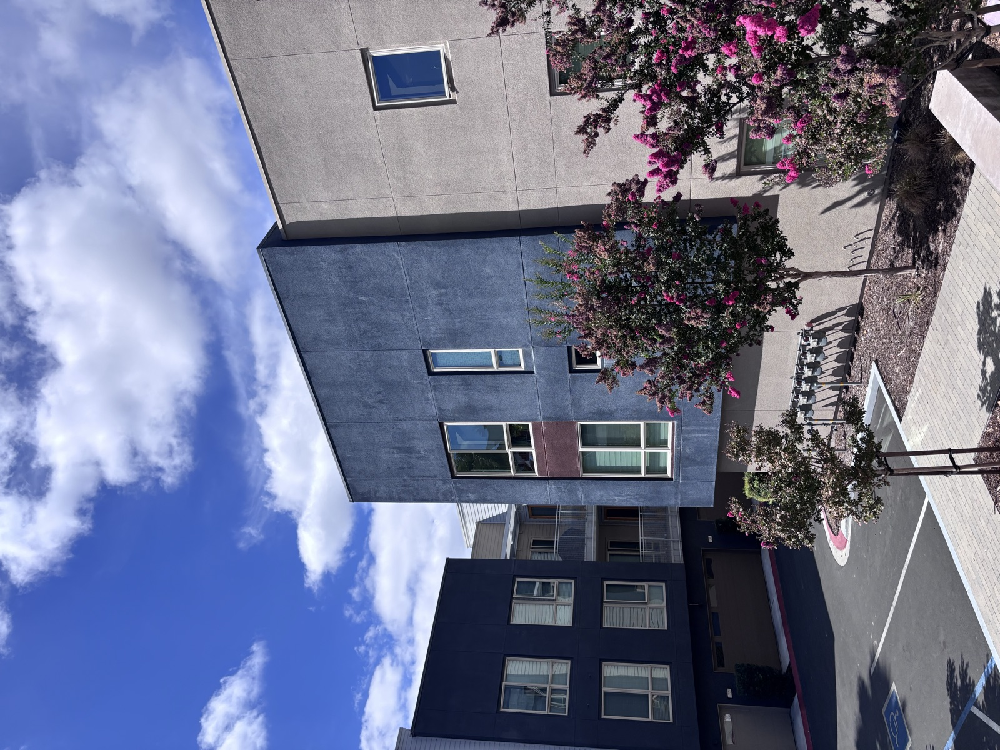

CS 180 · Project 0
A camera doesn't just record a scene — where you stand and how far you zoom quietly rewrites its geometry. This page walks through three experiments in that relationship: a selfie taken two different ways, a building facade compressed and stretched, and a dolly zoom that pulls both tricks at once.
Same face, same framing — one shot from close range, one taken from several feet back and zoomed in to match. Compare what happens to the proportions of the face.


The same trick in reverse, aimed at a building facade: zoomed-in from a distance versus wide-angle up close, matched so the building reads at the same size in both.


Moving the camera back while zooming in, timed so the subject stays the same size — the "Vertigo shot." The background does all the moving.